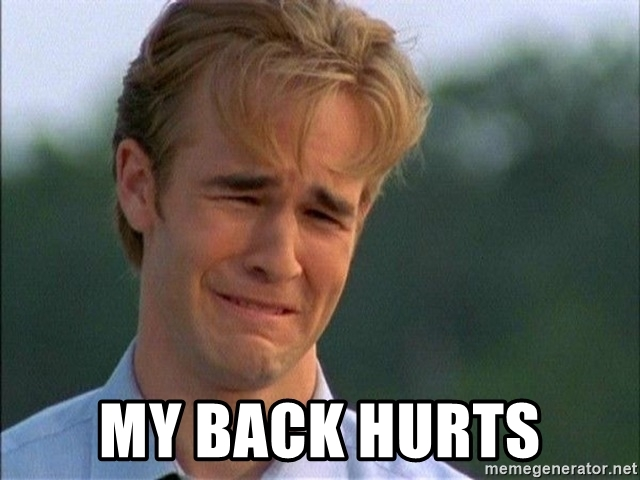

แนะนำตัวกันก่อนนะ
ผมชื่อ แดน
ชื่อจริงนายเมธังกร มากสุข
ตอนนี้กำลังเรียนITอยู่วิชาที่เรียนก็เอามาสร้างอันนี้แหละ
ผมชื่อ แดน
ชื่อจริงนายเมธังกร มากสุข
ตอนนี้กำลังเรียนITอยู่วิชาที่เรียนก็เอามาสร้างอันนี้แหละ
| สิ่งที่ชอบ | สิ่งที่ไม่ชอบ |
|---|---|
| ชอกโกแล็ต | ของเผ็ด |
| การตื่นสาย | การตื่นเช้า |
| สัตว์ | ที่เสียงดัง |
นี้คือคลิปสอนที่ช่วยผมไว้ระดับหนึ่งเลยนะแบบ
โครตมีประโยชน์เลย
Me after do all of this
